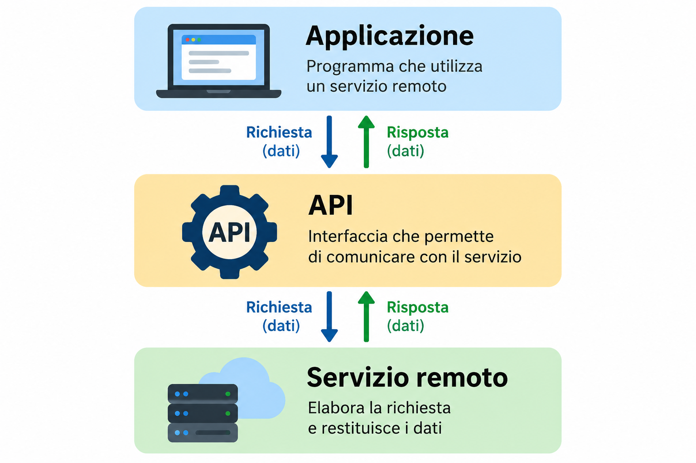
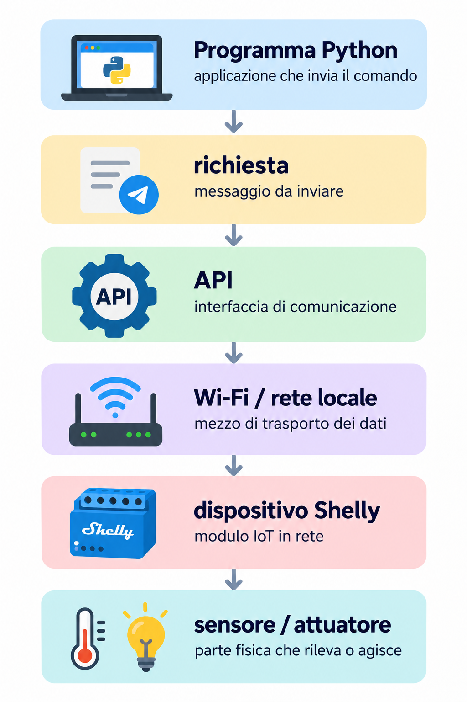
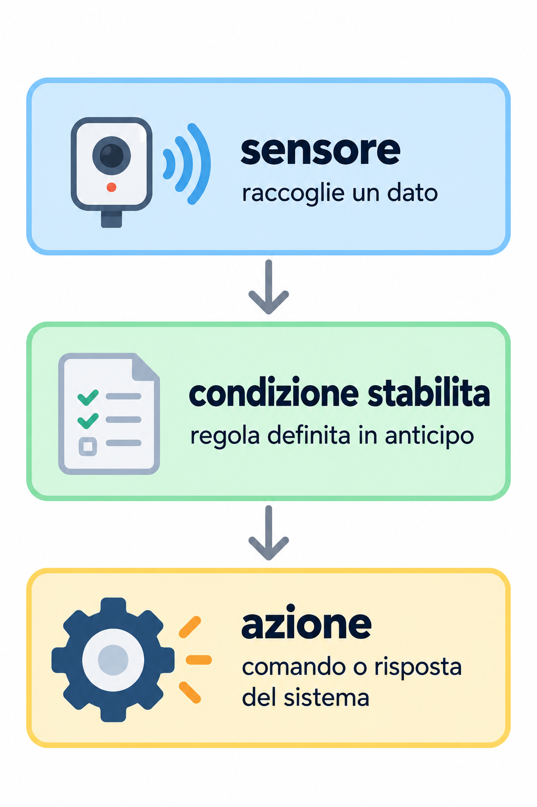
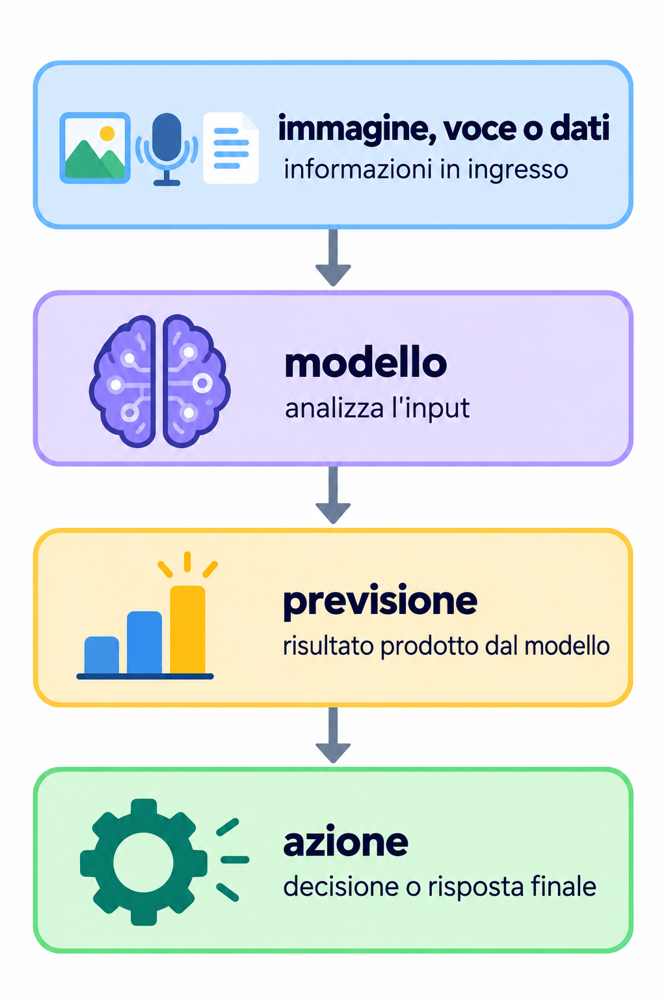

Interagire
Faremo reagire una pagina Web alle azioni dell’utente e ai dati inseriti.
Classe quarta · 2 ore settimanali
Dalle pagine Web statiche ad applicazioni capaci di interagire con l’utente, usare servizi remoti e comunicare con dispositivi reali.
Il percorso
Durante l’anno costruiremo applicazioni progressivamente più interattive e connesse. JavaScript, le interfacce di programmazione delle applicazioni (Application Programming Interface, API), il cloud computing, l’Internet delle cose (Internet of Things, IoT) e l’intelligenza artificiale (IA) saranno affrontati soprattutto attraverso esperienze concrete.
Faremo reagire una pagina Web alle azioni dell’utente e ai dati inseriti.
Collegheremo un’applicazione a servizi remoti e leggeremo dati strutturati.
Metteremo in relazione software, servizi e dispositivi reali, verificando ogni passaggio in laboratorio.
Roadmap
Console del browser, variabili e tipi, condizioni, cicli, funzioni e array. Useremo il Document Object Model (DOM) e gli eventi per collegare JavaScript al documento HTML.
Pagina interattivaRichiesta, risposta e dati in formato JavaScript Object Notation (JSON). Le API permettono a un’applicazione di comunicare con un altro sistema senza studiare subito tutti i dettagli dei protocolli.

Confronteremo risorse locali e remote, hosting, distribuzione di un’applicazione e servizi per sviluppatori. Incontreremo a livello introduttivo Software as a Service (SaaS), Platform as a Service (PaaS) e Infrastructure as a Service (IaaS).
Applicazione onlineOsserveremo come un programma possa leggere lo stato di un dispositivo reale e comandarlo attraverso la rete. Python sarà uno strumento laboratoriale per inviare richieste alle API, soprattutto nella rete locale.

Partiremo da applicazioni osservabili: riconoscimento di immagini o voce, classificazione e addestramento di un semplice modello con Teachable Machine. Quando sarà utile, proveremo a usare il modello in un’applicazione.
Modello sperimentaleRequisiti, progettazione, implementazione, test, distribuzione e manutenzione accompagneranno i progetti: saranno azioni da svolgere sul prodotto, non un elenco da imparare a memoria.
Progetto verificabileQuando utile al progetto, useremo alcuni semplici diagrammi Unified Modeling Language (UML) per descrivere sistemi realmente progettati, soprattutto casi d’uso, attività e sequenze. Il diagramma delle classi resterà un eventuale approfondimento.
Diagrammi applicatiNon ogni automatismo usa l’intelligenza artificiale. Confronteremo i due percorsi per riconoscere che cosa prende la decisione.

Il comportamento dipende da regole scritte in modo esplicito.

Un modello addestrato produce una previsione, che il software può usare per decidere un’azione.
Materiali disponibili
Apri le lezioni già create e verificate seguendo l’ordine del percorso.
Modulo 1 · Lezione 4.00 · 2 ore
Console del browser, primo file JavaScript e prima pagina che reagisce alle azioni dell’utente.